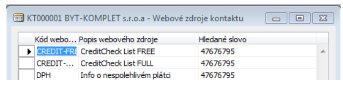
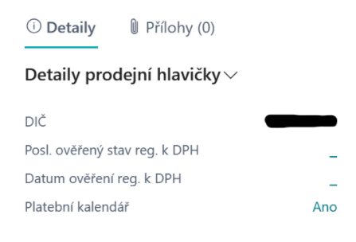
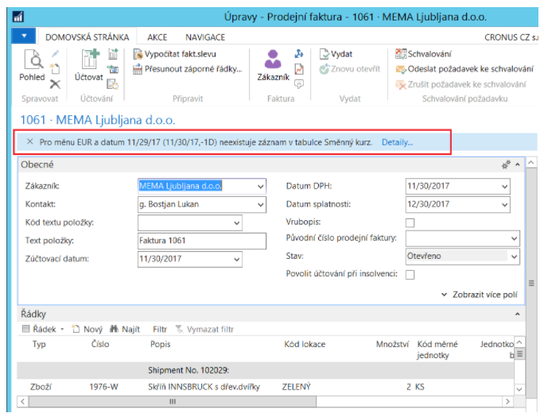

Sada rozšíření pro Finance
Aktualizace: 01.02.2022
Add-on modul Sada rozšíření pro Finance obsahuje společné funkce pro podporu fungování ostatních add-on modulů balíčku rozšíření financí a současně obsahuje některé doplňující funkce jako:
- Credit Check – napojení na externí databázi Credit Check a kontrola kredibility firem
- Splátkové kalendáře – rozložení splátek pohledávek a závazků do dílčích plateb
- Hierarchický návrh cen – možnost vypnutí standardního návrhu nejnižších cen
- Vymáhání pohledávek - podpora pro vymáhání dlouhodobých pohledávek, které dosud nebyly uhrazeny. U takových pohledávek je potřeba mít především informaci o stavu pohledávky a mít možnost připojit dokumenty.
- PDP – Režim Přenesené daňové povinnosti – doplnění kontrol limitů při vydávání dokladů.
- Skonto dobropisy pro CZ
- Kumulování plateb na Platebním příkazu
- Účtování přeplatků nákupních záloh
- Kontrola registrace k DPH
- Kontroly směnných kurzů
- Viditelný poplatek - Možnost ke zboží přiřadit tzv. "viditelný poplatek", který se automaticky vkládá do nákupních/prodejních dokladů. Využívá se např. pro účtování poplatku za recyklaci el. odpadu, apod.
- Spotřební daň - Povinnost přiznat spotřební daň vzniká výdejem z daňového skladu – prodej v rámci ČR, interní transfer v rámci ČR. Jednou měsíčně je třeba vykázat splatnou spotřební daň. Na položkách zboží je informace o spotřební dani a o povinnosti daň přiznat. Je k dispozici report, který uzavírá otevřené položky spotřební daně. Dále je k dispozici report z žurnálu poskytující podklad pro Prohlášení o spotřební dani.
- Další menší úpravy či vylepšení vybraných oblastí (finance, sklady, obecné, atd.)
Modul Sada rozšíření pro Finance je nutný pro ostatní add-on moduly AC Financial Packu.
Credit Check
Jedná se o integraci BC na komerční službu CreditCheck, která slouží pro kontrolu bonity partnerů.
Proto, aby v systému bylo co nejvíce informací o vybraném partnerovi, jsou informace importovány přes webovou službu Creditcheck ERP viz. http://www.creditcheck.cz/ProductDetail.aspx?id=02.
Společnost CreditCheck deklaruje, že každý den ve své databázi českých firem provádí 185 různých typů kontrol. Služba Creditcheck ERP je zdarma stejně tak jako vytvoření výpisu CreditcheckList. V databázi Creditcheck lze tedy prověřovat partnera bez přihlášení. V případech, kdy je u firmy nalezen oranžový nebo červený semafor je potřeba se pro prohlédnutí detailů přihlásit. Toto je placená služba, kterou si zákazník dle své potřeby uzavře s CreditCheck.
Stav CreditCheck
Stažené informace o bonitě zákazníka CreditCheck ERP (do bonity patří i info o nespolehlivém plátci DPH) jsou na kartě dodavatele zobrazeny v Informačním okně Hodnocení dodavatele.
Note
Pro zobrazení informačního okna použijte funkci přizpůsobit.
Spuštění webových zdrojů
Spuštění webových zdrojů kontaktu je nyní umožněno také na kartě dodavatele/zákazníka a také na souvisejících dokladech (nabídka, objednávka, faktura, pokladní doklad, příkaz k úhradě). Spuštění se provede kliknutím na ikonu stavu CreditCheck (semafor). Zobrazí se tento formulář:

Zrušení stavu CreditCheck
Jestliže má uživatel v nastavení zaškrtnut boolean „Povolit změnu stavu CreditCheck“ pak na kartě kontaktu může pomocí funkce „Zrušit stav CreditCheck“ provést zrušení naimportovaného stavu. Důvodem může být to, že si uživatel tohoto partnera zkontroloval a problém pro který má uvedený tento stav, nepovažuje za důležité, proto provede jeho zrušení.
Warning
Uvedená změna je nevratná a změna stavu CreditCheck (nové označení) se provede pouze v případě, že u uvedeného partnera byl zjištěn nový problém. Např. že se nyní dostal navíc i do insolvenčního řízení.
Hierarchický návrh cen
Standardní prodejní cenotvorba je založena na myšlence vyhledání nejnižší možné ceny. Toto není vždy vyhovující, pak je možné zvolit tzv. Hierarchický návrh cen.
Poznámka: Hierarchický návrh je dostupný pouze prodejní ceny zboží.
Hierarchický návrh ceny znamená, že je cena (ale i řádková sleva) dohledávána v pevně definovaném pořadí (dle hierarchie). V případě nalezení definice na učité úrovni již nehledá dále.
Prodejní ceny systém dohledává v následujícím pořadí:
- Kampaň
- Zákazník
- Cenová skupna zákazníka
- Všichni zákazníci
Prodejní řádkové slevy systém dohledává v následujícím pořadí:
- Kampaň a Zboží
- Kampaň a Cenová skupina zboží
- Zákazník a Zboží
- Cenová skupna zákazníka a Zboží
- Všichni zákazníci a Zboží
- Zákazník a Cenová skupina zboží
- Cenová skupina zákazníka a Cenová skupina zboží
- Všichni zákazníci a Cenová skupina zboží
Platení kalendáře
Funkcionalita Platebních kalendářů je k dispozici v prodeji i v nákupu a její fungování je v obou oblastech obdobné. Platební kalendář je možné definovat na neúčtovaném dokladu, ale i dodatečně na zaúčtovaném dokladu v měnu dokladu.
Účtování prodejní faktury s platebním kalendářem
- Vyberte ikonu
 , zadejte Prodejní faktur a poté vyberte související odkaz.
, zadejte Prodejní faktur a poté vyberte související odkaz. - Vytvořte novou prodejní fakturu dle vašich zvyklostí. V poli Datum splatnosti definujte nejzašší datum pro platební kalendář.
- Spusťte akci Platební kalendář.
- Spusťte funkci Generovat platby.
- Definujte počet dílčích plateb a systém dopočte pole s částkami plateb. Poslední platbu systém dopočte do celkové výše faktury.
- Doplňte Datum splatnosti první platby a datumový vzorec do pole Perioda plateb.
- Tlačítkem OK spusťe generování návrhu platebního kalendáře.
- Vytvořený platební kalendář můžete ještě ručně upravit.
- Tlačítkem OK zavřete stránku.
- Na prodejní faktuře spusťte funkci Účtovat.

Po zaúčtování prodejní faktury (či objednávky) vzniknou navíc položky zákazníka, které vyrovnají saldo původní položky a k nim vznikne několik nových (se stejným typem dokladu, číslem dokladu, atd.) pohledávek s daty splatnosti a částkami dle platebního kalendáře.
Note
Na prodejním dokladu je přítomnost platebního kalendáře indikovánan příznakem Platební kalendář v okně s fakty Detaily prodejní hlavičky. Kliknutím na Ano se příslušný kalendář otevře.

Vytvoření platebního kalendáře k zaúčtované faktuře
- Vyberte ikonu , zadejte Účtované prodejní faktury a poté vyberte související odkaz.
- Spusťte akci Platební kalendář.
- V řádcích definujte vlastní rozpis splátek.
- Vyrovnejte zůstatek faktury a zaúčtujte platební kalendář funkcí Účtovat.
Kumulování plateb na platebním příkazu
Funkcionalita umožňuje sloučení řádků platebního příkazu, což je vhodné, pokud je potřeba uhradit více nákupních dokladů jednou částkou. Kumuluje se podle Čísla účtu, SWIFT, IBAN, Měny a volitelně dle VS, KS a SS.
Tato funkcionalita slučuje řádky plateb pro dodavatele, kteří mají povoleno kumulovat platby, dle pravidel nastavených na bankovním účtu. Další informace naleznete v Nastavení kumulování plateb.
Vytvoření platebního příkazu s kumulací plateb
- Vyberte ikonu , zadejte Platební příkazy a poté vyberte související odkaz.
- Vyberte číslo banky s nastavenou kumulací plateb, pro který chcete vytvořit platební příkaz a potvrďte tlačítkem OK.
- Spusťte akci Navrhni platby… (alternativou je ruční zadání řádků příkazu, popř. funkce Import…)
- Doplňte Poslední datum splatnosti a Částku k dispozici, popř. upravte další parametry.
- Tlačítkem OK spusťe generování návrhu plateb.
- Vytvořený platební příkaz můžete ještě ručně upravit (pro ověření funkcionality kumulace plateb zkontrolujte, že máte v řádcích více plateb na stejný účet dodavatele se zapnutou kumulací plateb)
- Na platebním příkazu spusťte funkci Vydání.
- Tlačítkem OK potvrďte volbu Vydat.
- Volbou Ano potvrďte otevření karty vydaného platebního příkazu.
- Na vydaném platebním příkazu spusťte funkci Vytvořit řádky exportu.
- Volbou Řádky exportu otevřete seznam řádků exportu. Neslučované položky jsou převedeny do řádků exportu platebního příkazu ve stejném detailu. Pokud chcete změnit výsledek, změňte nastavení a funkci pro vytvoření řádků spusťte znovu.
- Spusťte akci Export platebního příkazu… (alternativou je ruční zadání řádků příkazu, popř. funkce Import…)
Note
Pokud se nekumuluje dle symbolů, tak se sloučené řádky založí s variabilním symbolem z číselné řady a SS a KS se vezmou z prvního slučovaného řádku příkazu. Datum splatnosti se vezme ten nejnižší ze slučovaných řádků.
Kumulované platby na bankovním výpisu
Proces zpracování výpisu je z pohledu uživatele beze změn. Rozdíl je pouze v tom, že při Vydání systém hledá dle identifikačních údajů pohybu na řádku výpisu odpovídající záznamy na vydaném platebním příkazu v řádcích exportu. Pokud najde, na pozadí dojde k nahrazení „kumulovaných plateb“ opět rozdělenými řádky (je přenesen i původní kumulovaný řádek, ovšem s nulovou částkou).
Kontrola registrace k DPH
Pro eliminaci rizika nesprávného účtování a vykázání DPH byly do systému doplněny 2 nové kontroly.
První slouží k upozornění uživatelů na nesrovnalosti s registrací k DPH při práci s doklady, druhá pak následně zpětně při zpracování podkladů pro výkaz DPH. Další informace naleznete v Nastavení kontroly registrace k DPH.
Kontrola registrace k DPH na dokladech
Při vytváření prodejních, nákupních či servisních dokladů probíhá kontrola na existenci platného ověření registrace k DPH v rámci zadaného časového intervalu. Tato kontrola se provádí při validaci zákazníka/plátce (resp. dodavatele/věřitele) na dokladu; pro období od pracovního data zpětně se hledá záznam v tabulce Protokol ověření DIČ s ověřenou registrací (stav Platný = DIČ je registrováno k DPH či Neplatný = DIČ není registrováno k DPH).
Uživatel je upozorněn, když příslušné DIČ nebylo v systému ještě nikdy ověřováno. Podobně je upozorněn, když je ověření DIČ staršího data než dle nastavení. Stiskem Detaily… uživatel zobrazí Protokol ověření DIČ.
Poznámka: Nejen informace o ověření registrace k DPH jsou na nákupních (ale i prodejních či servisních) dokladech viditelné v okně s fakty Detaily nákupní hlavičky. Z tohoto okna je možné spustit akci pro kontrolu DIČ zadaného na dokladu.
Kontrola registrace k DPH dle položek DPH
Před odesláním výkazu DPH je vhodné ověřit, zda-li budou všechny reportované záznamy v pořádku z pohledu registrace k DPH.
- Vyberte ikonu , zadejte Výkazy DPH a poté vyberte související odkaz.
- Spustte sestavu Ověření DIČ – položky DPH.
- Zvolte tlačítko OK a spusťte sestavu.
Sestava Ověření DIČ – položky DPH
Tato sestava prochází položky DPH, kontroluje stav registrace DPH, případně ověří DIČ online, je-li třeba.
Výstupem sestavy je seznam položkyDPH dle volby Zobrazit stav:
- Vše
- Neověřené a Neplatné – vypíše položky, u kterých se z nějakého důvodu nepovedlo ověřit stav (Neověřené) a položky s DIČ, které není aktuálně registrováno k DPH.
- Neověřené a Platné – používá se typicky pro kontrolu položek u neplátců DPH, kdy platná registrace je vlastně chybou.
Kontroly směnných kurzů
Pro eliminaci rizika nesprávného zadání směnného kurzu a tudíž zaúčtování dokladu s nesprávným kurzem, byly do systému doplněny 2 nové kontroly.
Kontrola správnosti zadaného směnného kurzu
Systém provádí kontrolu ručně zadaného směnného kurzu vůči nastaveným limitům. Kontrola se provádí:
- při vkládání hodnoty do Směnných kurzů,
- při vkládání kurzu na nákupních, prodejních nebo servisních dokladech
Kontrola importu směnných kurzů
Při procházení či vytváření prodejních, nákupních či servisních dokladů systém kontroluje existenci směnného kurzu pro určité datum. Toto datum se počítá vzhledem k Zúčtovacímu datu a zohledňuje víkendy a jiné nepracovní dny (státní svátky, Vánoce, Velikonoce, apod.).
Pokud pro takový pracovní den nenajde záznam v tabulce Směnné kurzy, zobrazí notifikaci. Kliknutím na Detaily… se otevře tabulka Směnné kurzy pro měnu z dokladu.

Vymáhání pohledávek
Funkcionalita slouží jako podpora pro vymáhání pohledávek, které dosud nebyly uhrazeny. U takových pohledávek je potřeba mít především aktuální informaci o stavu pohledávky a průběhu vymáhání.
Poznámka: V případě potřeby připojovat k evidenci elektronické dokumenty, zvažte využití addonu Publikování SharePoint od firmy AUTOCONT., popř. jiný produkt třetí strany.
Stav vymáhání pohledávky je zobrazen v Informačním okně Podrobnosti položky zákazníka. Díky tomu má uživatel okamžitě k dispozici tuto základní informaci, ale také detailní informace na jedno kliknutí.
Vytvoření nové evidence pro pohledávku
- Vyberte ikonu , zadejte Položky zákazníka a poté vyberte související odkaz.
- Na stránce Položky zákazníka přejděte na vybraný záznam a spusťte funkci Informace o pohledávce.
- Potvrďte, že si přejete vytvořit kartu informace o pohledávce.
Zaznamenání stavu pohledávky Pole Stav pohledávky, umístěné na stránce Informace o pohledávce, slouží k zaznamenání stavu vymáhání. Toto pole nabývá hodnot:
- <prázdné>
- Vymáhání
- Soudní řízení
- Pojistná událost
- Postoupení
- Exekuce
- Konkurz
- Vypořádáno
Dále je možné evidovat, zda-li a komu byla pohledávky předána, druh vymáhání a v neposlední řadě Datum uzavření vymáhání pohledávky.
Archivace
Na stránce Informace o pohledávce lze funkcí Archivovat vytvářet v libovolném okamžiku kopie aktuálního stavu Informace o pohledávce. K zobrazení archivovaných záznamů spusťe funkci Archivované záznamy na stránce Informace o pohledávce.
Evidence souvisejících pohledávek
Na stránce Informace o pohledávce lze v poli Číslo nadřazené položky přiřadit pohledávku k jiné v případě, že se například jedná o společný postup při jejich vymáhání.
K zobrazení souvisejících záznamů spusťe funkci Související položky na stránce Informace o pohledávce.
Rozšíření číslené řady
Potřeby firem v oblasti práce s číselnými řadami bývají rozmanitější než umožňuje standard systému. Pro jsme rozšířili možnosti o 2 doplňkové nástroje:
- Masky číselných řad – pro usnadnění generování rozsahů pro další (obvykle fiskální) období
- Návaznosti číselných řad – pro možnost definice různých řad pro účtované doklady
Generování číselných řad dle masek
Vyberte ikonu
, zadejte Generátor číselných řad z masky a poté vyberte související odkaz.Na stránce Generátor číselných řad z masky v záložce Možnosti zadejte:
- Počáteční datum – od jakého data má být nová číselná řada aktivní
- Přírůstek čísel – určuje velikost intervalu mezi čísly v číselné řadě
- Číslo varování – určuje kdy chcete obdržet varování o blížícím se konci řady (nepovinné)
Je-li třeba, zadejte filtr na Kód číselné řady, pro který má být výše uvedené aplikováno.
Zvolte tlačítko OK a spusťte sestavu.
Návaznosti číselných řad
Návaznosti lze využít v nejrůznějších oblastech, typicky na nákupních, prodejních, servisních dokladech či vazbě na ně, na objednávkách transferu, apod.
Pro více informací navštivte Controling Basic - Nastavení.
Zaokrouhlední faktury dle způsobu úhrady
V praxi se často vyskytuje potřeba řešit zaokrouhlování faktur různě podle kontextu způsobu úhrady, např. jinak pro hotovostní operace, jinak pro úhrady z účtu či jinak pro doklady s úhradou pomocí zálohové faktury. Takovou možnost dnes firma má pro zaokrouhlení pomocí rozšířeného nastavení na bázi Kódu způsobu platby.
Pro více informací navštivte Controling Basic - Nastavení.
Ostatní funkcionality
V této kapitole jsou popsány další menší úpravy či vylepšení rozdělené dle oblastí.
Obecné
Rozšíření funkcionality pro migrace dat
Na stránky Sešitu konfigurace a Karta konfiguračního balíčku byla doplněna funkce Nastavit pořadí zpracování. Tato funkce navrhne pořadí, v jakém mají být jednotlivé balíčky zpracovávány při zohlednění vzájemných vazeb (pole Pořadí balíčku a Pořadí tabulky v Sešitu konfigurace).
- Vyberte ikonu , zadejte Sešit konfigurace a poté vyberte související odkaz.
- Na stránce Sešit konfigurace spusťe funkci Nastavit pořadí zpracování (část Proces).
- Vyberte Kód balíčku, pro který má být pořadí nastaveno.
- Zvolte tlačítko OK a spusťte sestavu.
Sestava Definice datových struktur může sloužit jako dokumentace k migračním úlohám. Sestavu je možné najít nejen na stránce Sešit konfigurace, ale i zcela samostatně:
- Vyberte ikonu , zadejte Konfigurační sešit – datové struktury a poté vyberte související odkaz.
- Vyberte Kód balíčku.
- Zvolte tlačítko OK a spusťte sestavu.
Finance
Reporty v Žurnálu zboží
Na stránce Žurnály zboží jsou doplněny sestavy:
- Žurnál zboží - hodnota
Banky
Na Deníku odsouhlasení doplněna funkce Účto a Tisk.
Poznámka: Od verze BC19 je doporučeno využívat novější funkcionalitu Bankovní dokumenty, která nevyužívá Deník odsouhlasení.
Pokladny
Do hlavičky pokladního dokladu je doplněno pole Oprava. Je-li uživatelem zapnuto, bude systém účtovat na stejné strany účtů, ale s opačným znaménkem. Díky tomu opravný doklad nenavyšuje obraty na stranách účtů.
Prodej
QR kód pro platbu na prodejní faktuře
Nová CU 52057071 "QR Code_acb", kde je funkce pro QR kód pro prodejní fakturu. Používá se .NET komponenta Microsoft.Dynamics.Nav.MX.dll, která je standardní AddIn od MS. Příklad použití je v reportu 52057066 "Sales - Invoice QR_acb", jen tisk samotného QR kódu a příklad volání funkce.
Poznámka: v BC online je nutné použít odlišný způsob – viz Barcode Fonts with Business Central Online - Business Central | Microsoft Docs
Sklad
Kontrola množství
Chybové hlášení o nedostupnosti zboží na skladě bylo doplněno o kód lokace a konkrétní sériové číslo či šarži.
Doplnění CRM
Vytváření webových zdrojů kontaktů
Doplníte-li dodatečně nový webový zdroj, můžete pak generovat hromadně pro všechny (či jen vybrané) kontakty:
- Vyberte ikonu , zadejte Vytvoření webových zdrojů kontaktu a poté vyberte související odkaz.
- V možnostech vyberte Kód webového zdroje, který chcete ke Kontaktům doplnit.
- V možnostech vyberte pole kontaktu, ze kterého má být doplněna variabilní hodnota URL odkazu.
- Je-li třeba, zadejte filtr pro omezení výběru kontaktů, pro které má být výše uvedené aplikováno.
- Zvolte tlačítko OK a spusťte sestavu.
- Vyberte ikonu
Krácení odpočtu DPH
Cílem funkcionality je umožnit dodatečně odúčtovat krácení odpočtu DPH z účtů DPH na definované finanční účty (obvykle nákladové účty). Dle evidovaného odhadu (zálohový koeficient) jsou v průběhu účetního období účtovány odpočty DPH. Pokud je třeba, po skončení kalendářního roku je možné přepočítat dle skutečného podílu použití těchto zdanitelných plnění pro účely uskutečněných plnění v daném roce.
Tato funkcionalita je při správném nastavení vhodná nejen české, ale i pro slovenské společnosti.
Note
Není řešeno okamžité účtování „neodčitatelné“ DPH na primárních dokladech (faktura, dobropis, pokladní doklad, finanční deník) ani směrování „neodčitatelné“ DPH za zdrojem zdanění (zboží, dlouhodobý majetek, služba).
Funkce Vypočti a účtuj koeficient DPH
Tato funkce umožňuje připravit tiskovou sestavu, popř. i zaúčtovat vypočtené odpočty DPH. Funkce pracuje pouze s položkami DPH obsahující kombinace účtoskupin nastavené pro odpočty DPH (viz Controling Basic - Nastavení - Krácení odpočtu DPH).
Vyberte ikonu
, zadejte Vypočti a účtuj koeficient DPH a poté vyberte související odkaz.V Možnostech vyplňte:
- Počáteční zúčtovací datum
- Koncové zúčtovací datum
- Počáteční datum DPH
- Koncové datum DPH
- Použít údaje z položky – mají-li b
- Zúčtovací datum (editovatelné pouze pokud není Použít údaje z položky = TRUE)
- Číslo dokladu (editovatelné pouze pokud není Použít údaje z položky = TRUE)
- Zobrazit položky DPH
- Účtovat – má-li být provedeno účtování položek DPH pro odpočet DPH
- Dimenze z nákladového účtu koef.
Na záložce Nastavení účtování DPH zvolte filtr, pro které položky DPH chcete spustit výpočet.
Spuštění funkce potvrďte pomocí tlačítka OK.
Registrace k DPH ve více zemích
Tato funkce rozšiřuje možnost práce s DPH a umožňuje uživatelům:
- Nastavit společnost jako plátce DPH v jiné zemi EU.
- Nastavit Kurzovní lístek pro zemi plnění.
- Nastavit registraci země pro zákazníky a dodavatele.
- Nastavit směry registrace země pro změny DPH obchodních účto skupin.
- Definovat kód země DPH a kód země plnění na dokladech.
- Podklad pro zahraniční účetní kanceláře se soupisem vystavených dokladů v dané zemi.
- Vytvářet OSS doklady (One Stop Shop) v režimu Evropské unie
- Podklad pro vyrovnání s FÚ OSS
Note
V souvislosti s touto funkcionalitou nejsou upraveny tiskové výstupy prodejních ani servisních dokladů. Případné úpravy vzhledu dokladů s jinou registrací k DPH musí být realizovány jako zákaznické úpravy.
Více registrací k DPH na dokladech
Volba země/oblasti registrace je k dispozici na záložce Zahraniční obchod na následujících dokladech:
- Prodejní objednávka,
- Prodejní faktura,
- Prodejní dobropis,
- Servisní zakázka,
- Faktura servisu,
- Dobropis servisu,
- Nákupní objednávka,
- Nákupní faktura,
- Nákupní dobropis,
- Účtovaná prodejní faktura,
- Účtovaný prodejní dobropis,
- Účtovaná nákupní faktura,
- Účtovaný nákupní dobropis,
- Účtovaná faktura servisu,
- Účtovaný dobropis servisu.
Více registrací k DPH ve finančním deníku
Volba země/oblasti registrace je k dispozici i ve finančním deníku. Pro zobrazení je třeba použít funkci Přizpůsobit.
Prodejní doklad s OSS
Režim OSS se na prodejním dokladu zapíná na základě následujících informací:
- Pole DIČ – režim OSS je možný jen pro zákazníky bez registrace, tedy s nevyplněným DIČ
- Kód země z lokace v hlavičce dokladu
- Kód země příjemce, resp. Kód země/oblasti DPH
Odvod peněz za OSS
V průběhu Q1 2022 bude doplněna sestava, která bude podkladem pro výkazy vůči finančnímu úřadu. Z uzavřených položek DPH za celý kvartál vypočte (a s potřebnými detaily vytiskne) částku, kterou má firma zaplatit na finanční úřad.
Uzavírání položek DPH
V průběhu Q1 2022 bude upravena funkcionalita uzavírání položek DPH.
Účtování přeplatků nákupních záloh
Note
Dále popsaná funkcionalita bude součástí modulu pouze do verze BC21, od verze BC19 jen jako rozšíření funkcionality záloh označených jako „zastaralé.“
V souvislosti se zavedením Kontrolního hlášení od 1.1.2016 vznikla potřeba řešit čerpání přeplatku nákupní zálohy pod jedním číslem dokladu, stejným datem a i stejným kurzem.
Celý postup lze realizovat ručně. Ovšem vzhledem k jeho komplikovanosti byla do systému doplněna funkcionalita, kdy v rámci konečné vyúčtovací faktury se přeúčtuje čerpání přeplatku zálohy.
Vrácení přeplatku nákupní zálohy
Po vytvoření finální nákupní faktury a přiřazení uhrazené nákupní zálohy je v případě přeplatku na záloze možné vložit další řádek s částkou přeplatku a příznakem Určeno pro vrácení zálohy (příznak je následně i na řádku zaúčtované faktury).
Zaúčtováním faktury pak pro každý takový řádek s přeplatkem vznikne položka dodavatele typu Dobropis. Vrácení peněz dodavatelem (Refundace) pak uživatel vyrovná právě s těmito vzniklými položkami.
Poznámka: Při použití funkce Odúčtovat přiřazenou zálohu (z karty Zálohového daňového dokladu) dojde analogicky k odúčtování těchto zúčtování přeplatků.
Viditelný poplatek
Tato funkcionalita není od verze BC15 součástí modulu.
Finance - Přenesená daňová povinnost
Tato funkcionalita není od verze BC15 součástí modulu.
Skonto dobropisy pro CZ
Protože byla z CZ lokalizace vypuštěna základní funkcionalita pro tvorbu prodejních skonto dobropisů, není již rozšiřující funkcionalita součástí modulu Sada rozšíření aplikace.